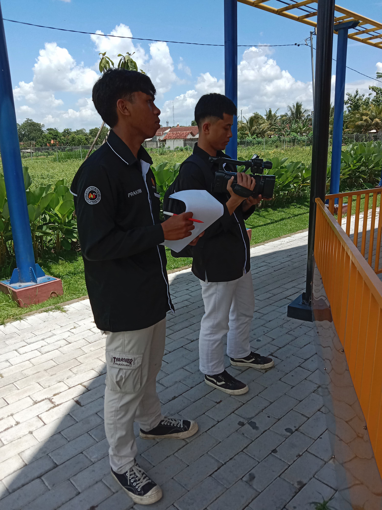
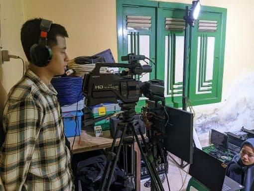
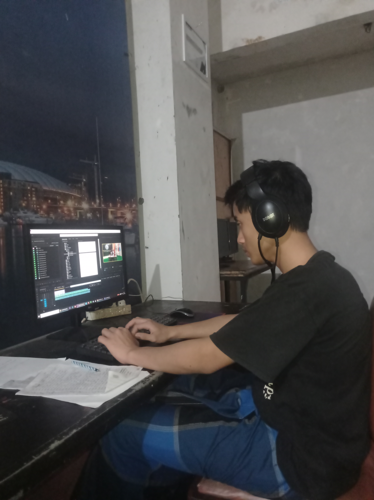

Portfolio


Cameraman
Saya menjadi cameraman dan operator di acara "Belajar Bersama di Museum Penataran"
Lihat Detail

Cameraman
DI ABTV Blitar ada acara abtv news setiap hari dan saya menjadi operator kamera
Lihat Detail

Editing Lembur
disini mendapat tugas ngedit acara Senandung Al-Quran , saya ngedit sampai jam 22:00 karna deadline
Lihat Detail
Editing
Acara kajian subuh adalah acara routin ABTV Blitar dan saya sebagai Editor disini
Lihat Detail
Actor
Saya menjadi pemeran sekaligus rekaman suara adzan di "adzan magrib Blitar dan sekitarnya"
Lihat Detail
Social